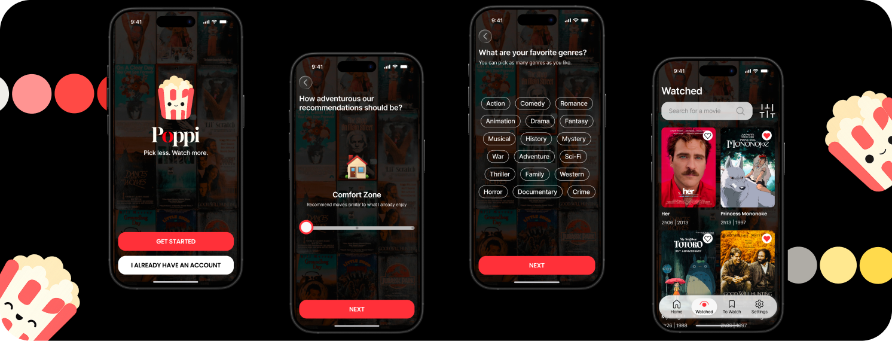
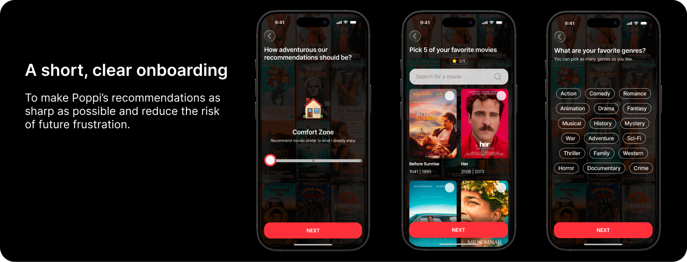
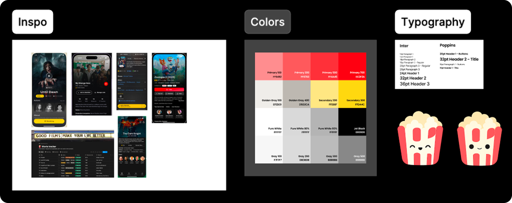
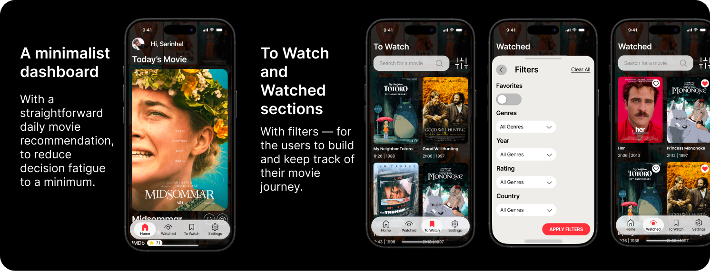
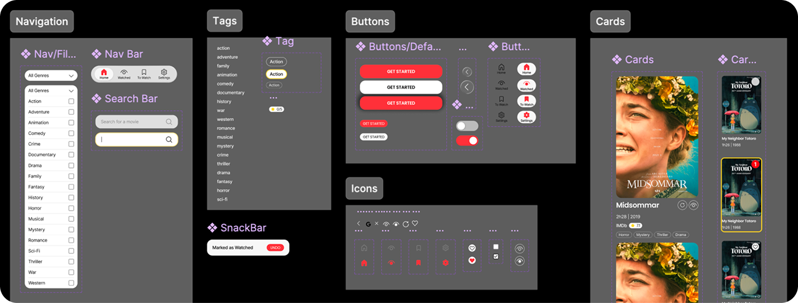
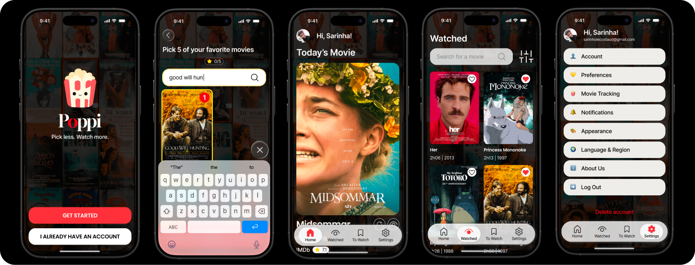

Reducing decision fatigue in movie discovery
Designing Poppi, a movie discovery app built to end endless browsing

01 — Overview
Poppi is a movie discovery concept designed to make choosing what to watch feel simpler, faster, and less overwhelming. Instead of asking users to browse endless lists, the experience guides them toward recommendations based on mood, comfort level, and viewing preferences.
The goal was to create a focused mobile experience that reduces hesitation and helps users move from browsing to watching with more confidence.
02 — The Problem

Streaming platforms offer large catalogs, but more choice does not always lead to better decisions. Users can spend too much time comparing options, second-guessing recommendations, or abandoning the search entirely.
The challenge was to design a discovery flow that helps users:
- Filter recommendations without feeling restricted.
- Make decisions with fewer steps and less cognitive effort.
- Feel confident that the suggested movie matches their current mood.
03 — Research

Gathering inspiration and building Poppi's visual identity
I explored common movie-selection behaviors, focusing on how people decide what to watch alone or with others. The research highlighted a recurring tension between wanting personalized suggestions and not wanting to answer too many questions before getting results.
Key Insights
- Users often want recommendations that match their energy level and mood.
- Too many filters can make the decision feel like more work.
- Clear, opinionated suggestions can reduce browsing fatigue.
These insights shaped a recommendation flow built around simple choices.
04 — Solution

I focused the experience around lightweight preference selection, clear recommendation logic, and a playful visual identity that makes the app feel approachable without adding friction.
1. Guided Choice
Help users express what they want through simple, low-effort questions.
2. Confidence
Present recommendations with enough context to support a quick decision.
3. Personality
Use a friendly tone and memorable visual elements to make discovery feel fun.
05 — Design Process

Creating a tidy Design System with reusable components
I started by mapping the core decision-making flow, then explored how much input the user should provide before seeing a useful recommendation.
The interface was shaped around a short onboarding sequence, a recommendation screen, and a visual system that keeps the experience clear and direct.
06 — Final Design

The final concept centers on reducing the time between opening the app and finding a movie that feels right. The design keeps the number of decisions small, the interaction flow focused, and the recommendations easy to act on.